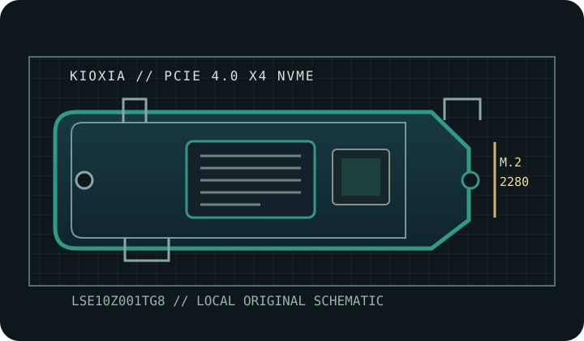

[ IDENTIFIED PRODUCT // PCIE 4.0 NVME ]
KIOXIA EXCERIA PRO 1 TB
1 TB M.2 2280 drive with native PCIe 4.0 x4 NVMe interface. This page is for the exact manufacturer part number shown below; heatsink, capacity and regional variants are not interchangeable.

SKU IDENTIFICATION: KIOXIA LSE10Z001TG8; capacity 1 TB. Verify the complete label, regional suffix, revision and firmware on the physical drive before installation. Do not transfer ratings to similarly named models or another capacity.
Manufacturer-identified specifications
| Product / exact MPN | KIOXIA EXCERIA PRO 1 TB — LSE10Z001TG8 |
|---|---|
| Capacity / form factor | 1 TB; M.2 2280. |
| Interface / host lanes | PCIe 4.0 x4; NVMe. Full link speed requires a compatible PCIe 4.0 x4 NVMe host; an older supported host may negotiate a lower link. |
| Controller | Not identified in the cited KIOXIA product sheet. |
| NAND | KIOXIA BiCS FLASH 3D TLC NAND. |
| Sequential performance | Up to 7,300 MB/s read and 6,400 MB/s write. Vendor-rated maximums, not guaranteed sustained host results. |
| Endurance | 400 TBW. The manufacturer TBW rating and warranty limit are not a substitute for backups. |
| Thermal package | Bare module. Provide suitable airflow and host heatsink contact for sustained work; check both motherboard pad placement and 2280 module clearance. |
Host compatibility, installation & thermal cautions
- Read the motherboard, laptop or console service manual to verify an M.2 M-key socket supports PCIe/NVMe, the 2280 module length, lane allocation, shared ports, BIOS/UEFI boot support, and the required NVMe driver. M.2 shape alone does not establish protocol or boot compatibility.
- Use a PCIe 4.0 x4 NVMe host to approach the listed maxima. PCIe generation and lane width are negotiated; a slower host, chipset sharing, firmware, workload, or thermal throttling reduces throughput.
- Bare module. Provide suitable airflow and host heatsink contact for sustained work; check both motherboard pad placement and 2280 module clearance. Keep airflow around the controller and follow the host manual's heatsink/thermal-pad instructions; do not stack thermal materials, remove factory cooling, or block ventilation without explicit manufacturer guidance.
- Install only after a full shutdown and removal of standby power as the host manual directs; use ESD precautions. Back up data and retain recovery media and encryption keys before replacement or firmware updates.
- Use firmware and management utilities for this exact capacity and SKU. Monitor SMART health and temperature during sustained writes; performance bursts do not predict long-duration speed or service life.
Manufacturer product, specification & service references
- KIOXIA EXCERIA PRO — product specificationsKIOXIA product-family specifications and flash technology; confirm capacity and regional SKU.
- KIOXIA EXCERIA PRO — manufacturer product briefKIOXIA capacity table with sequential performance, endurance, form factor, and interface.
Sequential rates are maximum vendor specifications under stated test conditions. Capacity-specific TBW and component identifications are included only where cited manufacturer material supports them; where a component is not disclosed, that is stated explicitly above.